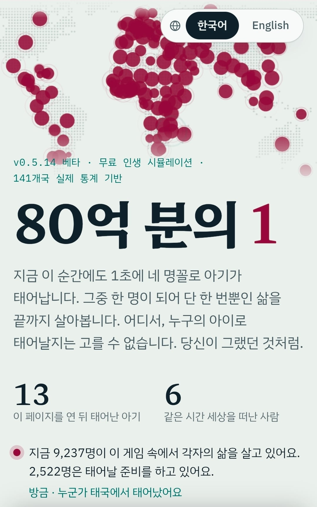
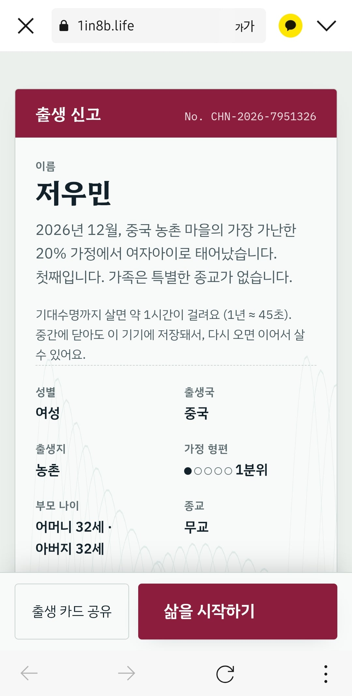
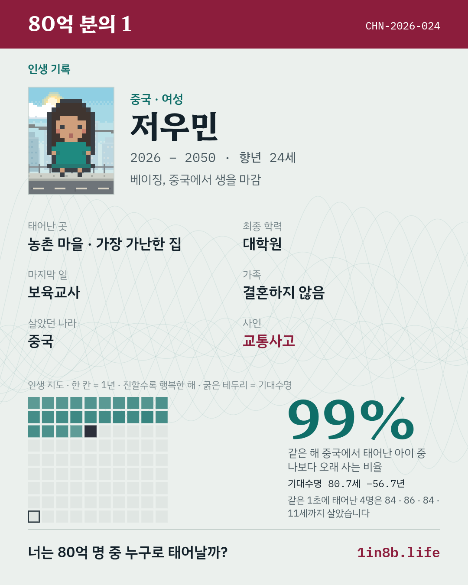

우리가 태어남에 있어서 아무런 선택도 할 수 없듯이 랜덤한 나라 랜덤한 성별 랜덤한 가정에 태어나 인생을 살아가는 모습을 지켜보는 게임임


이런식으로 태어나고 불특정한 사건에 휘말려서 요절하기도 함
내 인생인 중국의 저우민은 하위20% 농민공의 딸로 태어나 기적적으로 대학원까지 진학했지만, 교사로 일하기위해 베이징으로 올라가자마자 교통사고로 죽었음
아마 국가마다 통계적인 발병률이나 교통사고나 기대수명등을 입력해서 랜덤디스카운트를 돌리는 방식인거같은데 잘은 몰?루
그냥 어항 보듯이 하면되는 게임이니 츄라이
리세마라 계속해도 인도 인도 인도 앙골라 ㅅㅂ